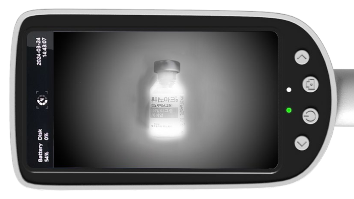
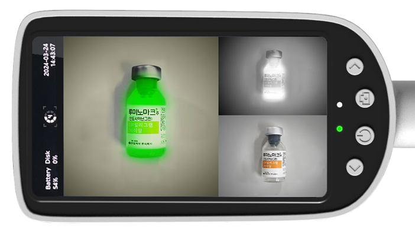

Visualization
보이지 않는 것을
보이지 않는 것을
보이게 하는 기술
수술 상황에 최적화된 3가지 이미징 모드를 제공하여 정확한 판단을 돕습니다.

Color Mode
육안과 동일한 선명한 컬러 영상으로 전체적인 수술 부위 파악

Grayscale Mode
ICG 표지자만 흰색으로 발광시켜 미세 혈관 및 림프절 식별

Merge Mode
컬러 영상 위에 형광 신호를 녹색으로 합성하여 위치 동시 파악